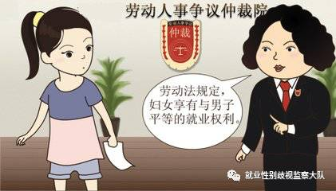
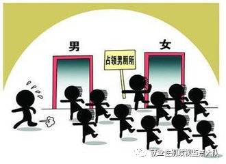
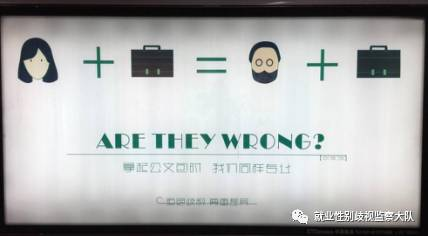
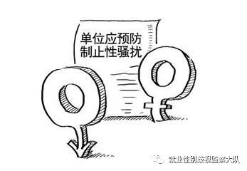
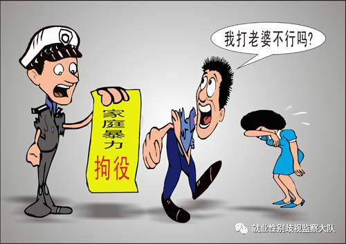

《深圳经济特区性别平等促进条例》实施4年，毫无成效？
深圳市五届人大常委会第16次会议通过了内地首部性别平等法规——《深圳经济特区性别平等促进条例》，并规定于2013年1月1日起实施。该条例在促进男女平等，保护女性权益方面做出了很大的进步，自出台之日起就受到社会各界的广泛关注。
亮点一：对“性别平等”和“性别歧视”进行了界定
本条例所称性别平等，是指在尊重生理差异基础上男女两性尊严和价值的平等以及机会、权利和责任的平等。
本条例所称性别歧视，是指基于性别而作出的任何区别、排斥或者限制，其目的或者后果直接、间接地影响、侵害男女两性平等权益的行为。
点评：明确了男女平等是实质上的平等而不是形式上的平等，有人称体测时男性跑1000米女性跑800米，女性要追求平等就先跑1000米再说，这是典型的形式平等思维。
亮点二：设置专门的性别平等促进工作机构
市性别平等促进工作机构履行下列职责：
(一)定期监测、评估全市性别平等工作情况，发布监测、评估报告；
(二)协调相关部门实施社会性别预算、社会性别审计和社会性别统计；
(三)对本市涉及性别平等的法规、规章和规范性文件进行社会性别分析或者指导相关单位进行分析；
(四)拟定消除性别歧视的政策；
(五)受理并按照规定办理有关投诉；
(六)法律、法规规定的其他职责。
点评：就目前来看，仅能检索到2016年3月15日下午，深圳市地方法规政策性别平等评估委员会召开第一次全体会议，这标志着，深圳市地方法规政策性别平等评估委员会（下文简称评估委员会）正式运行。
亮点三：支持女性参政

第十二条 市、区人民代表大会换届选举时，应当做好女性代表候选人的推荐、宣传工作。
第十三条 市、区人民代表大会代表中，应当有适当数量的女性代表，并逐步提高女性代表的比例。
点评：在第十二届全国人大代表中，女性代表699人，占代表总数的23.4%。全国政协第十二届委员会当中女性有399人，占委员总数的17.8%，分别比20年前提高了2.4个百分点和4.1个百分点。
亮点四：推进就业领域性别平等

第十五条 建立行业性别平衡制度。
市性别平等促进工作机构应当会同市人力资源和社会保障部门，定期发布行业性别比例平衡指导意见，促进男女两性实质平等。
第十六条 用人单位在招聘、录用人员时，除国家法律另有规定外，不得设置性别要求，不得以性别、婚姻、生育等为理由拒绝招录某一性别或者提高某一性别的招录标准。但是根据性别比例平衡指导意见以及有关法律、法规的规定对某一性别采取优先、优惠措施的除外。
违反前款规定的，由人力资源和社会保障部门（劳动监察大队）责令限期改正;逾期拒不改正的，处三千元以上三万元以下的罚款。
点评：求职时遭遇歧视，可以通过两个途径解决。一是向法院提起诉讼；二是依照《劳动监察条例》，拨打投诉电话12333，或直接到人社局投诉。
亮点五：公共服务设施应当兼顾女性的特殊需求

第十三条 市、区政府及其有关部门在提供公共服务或者建设公共场所母婴室、公共厕所等公共服务设施时，应当兼顾女性的特殊需求。
点评：微博@La_petite_princesse_hc 表示广州大学此前接受学校女生建议将学校的部分男生厕位改为女生厕位，提升女男厕位比例。今天（1月6日）发现学校居然将增加的女厕改回男厕！门框上还留着之前提示大家这是女厕时写的"女"字，男厕标志旁还贴着之前男厕改女厕的告示。
亮点六：广告不得包含性别歧视的内容

报纸、电台、电视台等媒体应当积极宣传性别平等的法律、法规和政策。
广告监督管理机构对发布含有性别歧视内容的广告主、广告经营者、广告发布者依照《中华人民共和国广告法》的有关规定予以处罚。
广告审查机关对含有性别歧视内容的广告做出审查批准决定的，对直接负责的主管人员和其他直接责任人员，依法给予处分。
点评：英国一部名为《你说一个女人也能打开它？——广告黄金时代的女性地位》的新书激起轩然大波，书中收集了大量歧视女性的广告，而那些广告已经在国外女权主义者们的努力下，被扫入垃圾堆。而直到今天，类似广告（美团网低俗的招聘广告、“支付鸨”事件等）依然在中国盛行。
亮点七：预防、制止工作场所的性骚扰

市性别平等促进工作机构应当定期发布反性骚扰行为指南，指导国家机关、企业事业单位、社会团体以及其他组织预防、制止性骚扰。
第二十三条 用人单位应当采取措施预防、制止性骚扰，并对职工进行反性骚扰的教育。
对违背他人意愿，利用职务、雇佣或者其他便利条件，明示或者暗示使用具有性内容或者与性有关的行为、语言、文字、图像，电子信息等形式，作为录用、晋升、报酬、奖励等利益交换条件实施性骚扰的，用人单位应当及时制止、处理。职工也可以向有关单位投诉、举报，有关单位应当及时采取措施予以处理。
点评：民生银行北京分行业务副总经理关某性骚扰女下属，民生银行仅仅是“要求关某做出个人深刻的检查，对其暂时停职并停发了季度奖金”，连撤职都没有。ＶＳ星河创服公司COO李某飞机上性骚扰女乘客，警方给予李元戎行政拘留5日的处罚，李某辞职，不再担任公司的任何职务，星河公司计划捐赠一百万元，支持和帮助妇女在不幸遭遇骚扰时能勇于并方便通过法律途径维权。
亮点八：禁止对家庭成员实施暴力

对正在实施的家庭暴力，公安机关接到报警后，应当及时出警制止，依法处理。
家庭暴力受害人可以根据有关规定，向人民法院申请人身安全保护裁定，由公安机关协助执行。
家庭暴力受害人可以向公安、民政、妇女联合会、性别平等促进工作机构等单位申请临时庇护。
点评：据深圳市妇联提供的数据显示，2015年深圳市全市妇联系统信访总量4882宗，同比下降23 .4%，但家庭暴力案件却呈增多趋势，2015年同比上升5.2%；其中男对女实施家暴的占88 .9%，对被害人身体实施伤害的占74 .2%。
除了这些亮点之外，《深圳经济特区性别平等促进条例（草案）》还拟实行“双亲育婴假”制度，除妇女法定假期外，男性可以在其生育或者抚养的子女3周岁内，每年享有5天育婴假；把退休选择权交给女性，由50岁或者55岁退休的“一刀切”改为实行“弹性退休”制度(不适用于公务员)；设置10月28日为“男性关爱日”。这些条例因与国家相关政策相冲突，且担心损害企业利益，最终取消，这让不少市民空欢喜了一场。
关于《条例》的实施， 多位专家共同呼吁，应尽早建立深圳性别平等机构，保障条例的有效实施，避免条例沦为一纸空文。羊城晚报2014年曾报道过由于编制被冻结，深圳市性别平等促进机构一直未能成立，导致该条例实施一年以来，各项政策规定至今仍如空中楼阁。专家们关于性别平等促进机构级别要高，对违法行为要有行政处罚权和借鉴香港平等机会委员会经验等方面的有益建议也成了徒劳无功。
自2013年实施以来，4年的时间已经过去了。去年《中华人民共和国反家庭暴力法》和住建部厕所新标准（将女性厕位与男性厕位比例提高到3:2，人流量较大地区为2:1）相继出台并实施，深圳的一些亮点如今也已成了寻常事。然而就业性别歧视，职场性骚扰和女性官员的比例低等情况并没有明显的改善。专门的性别平等促进机构何时能成立，它将被赋予多大的权利？在新的背景下，深圳如何继续保持敢为天下先？这些都需要有关部门进一步作为。